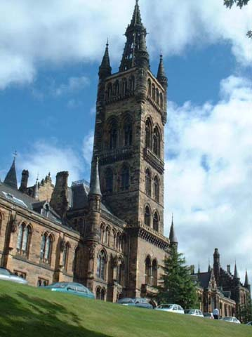

The Symposium

The 55th Symposium of Vertebrate Palaeontology and Comparative Anatomy & 16th Symposium of Palaeontological Preparation and Conservation was held in Glasgow.
The final draft of the Abstracts volume can be found here. Those who wish amendments to be made before the registered version is printed, then PLEASE get your requests in this week. Don't believe that your amendments (if mentioned to me in passing during the maelstrom of 'That Week') have been incorporated until you receive an explicit e-mail confirmation from me. Check the pdf of the current version on the website to make sure that you are satisfied. All comments to me before the October 10th deadline - alterations or comments after this date will be deemed too late to be incorporated.
The fifth and final circular has now been posted
Dates:
The week of Monday 27th August-Saturday 1st September 2007.
Venue
University of Glasgow IBLS/Hunterian Museum
Circulars
| First Circular | on-line | rtf | |
| Second Circular | on-line | rtf | |
| Third Circular | on-line | rtf | |
| Fourth Circular | on-line | rtf | |
| Fifth Circular | on-line | rtf | |
| Abstracts Programme Delegates Collections Access | |||